Monumentos
A lo largo de la historia, diversos monumentos han sido testigos de la presencia judía y de su lucha por la memoria.
El Monumento a la Shoá en Villaguay destaca la Menorá como símbolo de la resiliencia judía, emergiendo entre piedras que representan las dificultades superadas.
Este candelabro tiene una rica historia en otros monumentos: en el Arco de Tito en Roma se muestra su saqueo del Templo de Jerusalén; en Éfeso (Turquía), un dibujo de una Menorá en la biblioteca indica la presencia de una comunidad judía; en Albania, una Menorá aparece en una antigua columna; y en Curazao, una Menorá adorna la primera sinagoga de América.
En el Estado de Israel, la Menorá es parte central del escudo nacional y luce en el Parque de las Rosas frente al Parlamento (Kneset), con tallados en sus seis brazos que narran las penurias del exilio y el brazo central que refleja el regreso a la Tierra Prometida.
En Villaguay, este monumento permite conocer y apreciar estos símbolos hebraicos, uniendo el pasado y el presente del pueblo judío.
 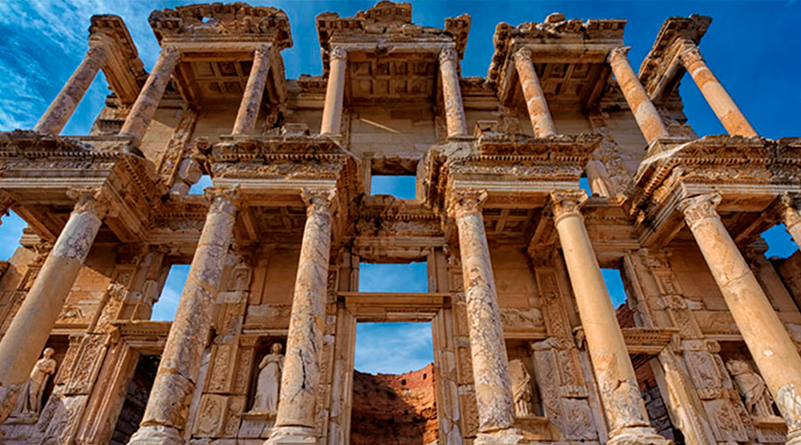
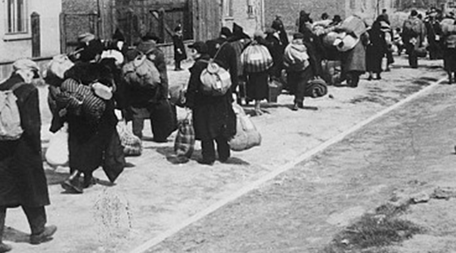
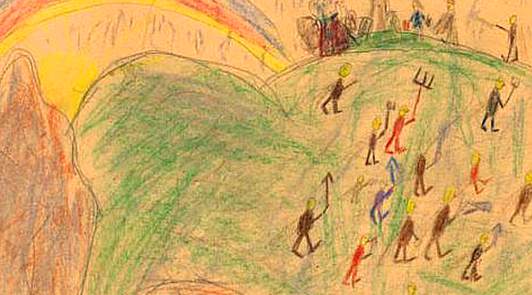
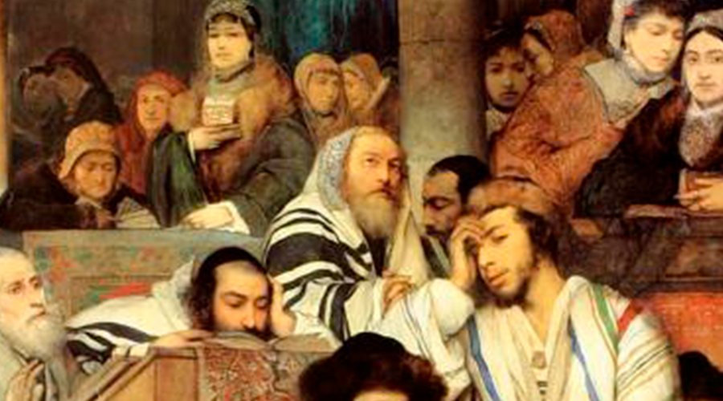
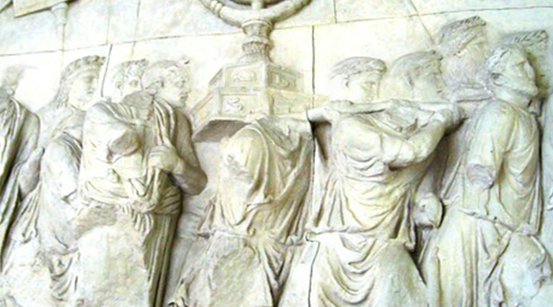
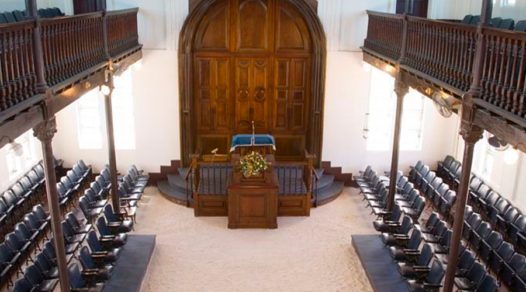
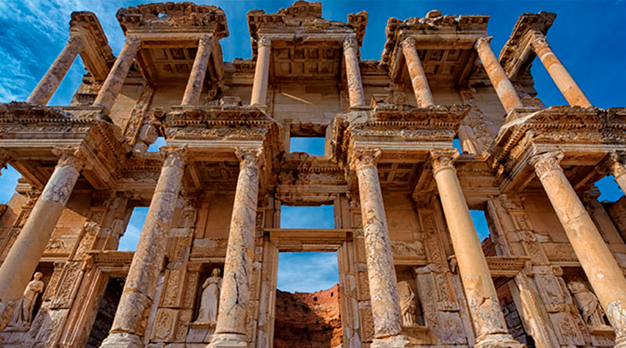
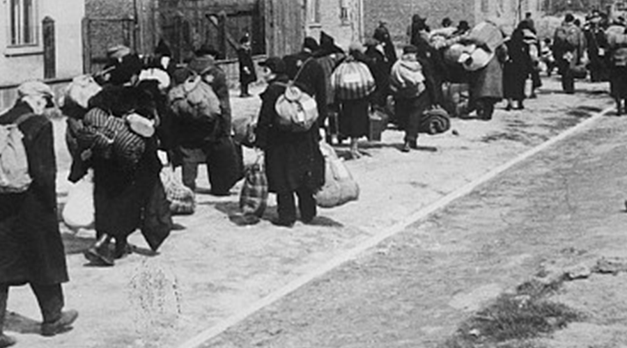
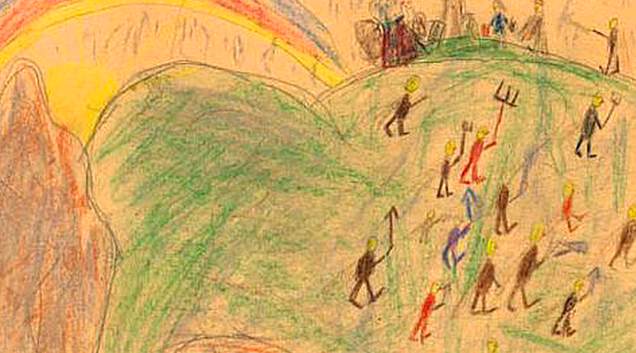
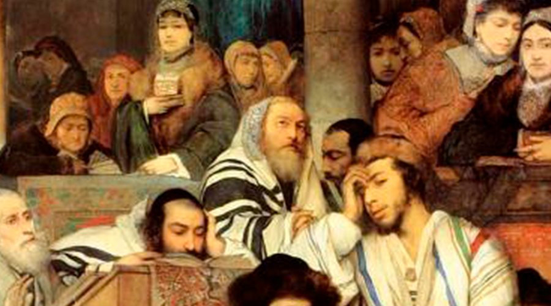
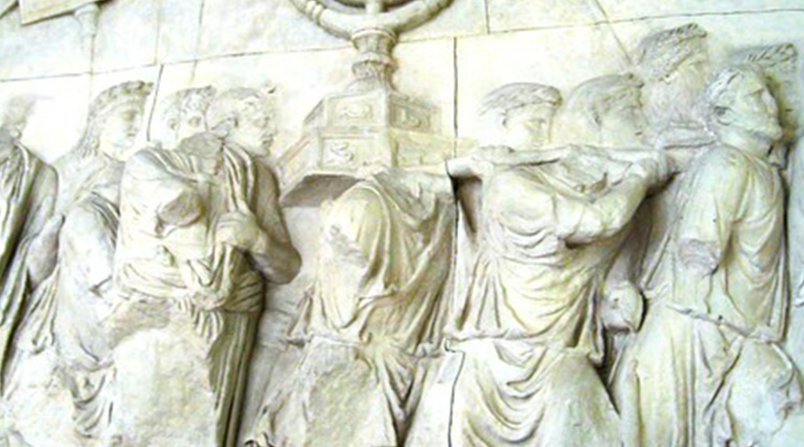
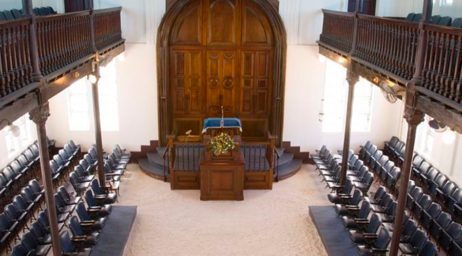